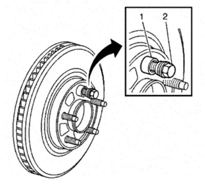
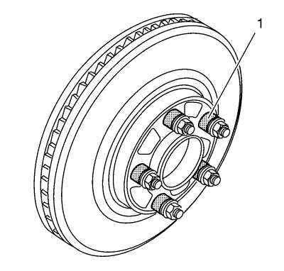

Corrección del alabeo montado del rotor de freno - Indexación
Herramientas especiales
CH 45101-100 Arandelas cónicas de rotor de freno
Si desea informarse sobre herramientas regionales equivalentes, consultar Herramientas especiales .
Advertencia: Consulte Advertencia relacionada con el polvo procedente de los frenos en la sección Prólogo.
Nota:
| • | La variación del grosor del rotor del freno SE DEBE comprobar ANTES de comprobar el alabeo montado (LRO). La variación de grosor que exceda el nivel máximo aceptable puede provocar pulsaciones en el freno. Consultar Medición del grosor del rotor de freno . |
| • | Un LRO del rotor de freno que exceda la especificación máxima permitida puede provocar un desarrollo de la variación del grosor en el rotor del freno, normalmente entre 4 800 -- 11 300 km (3.000 -- 7.000 mi). Consultar Medición del alabeo montado del rotor de freno . |

- Desmonte las arandelas CH 45101-100 y las tuercas de saliente que se montaron durante el proceso de medida del LRO montado.
- Revise la superficie de conexión de la brida de cubo/eje y el rotor de freno para garantizar que no queden partículas o restos extraños.
- Indexe el rotor de freno en una orientación diferente a la brida cubo/eje.
- Sujete firmemente el rotor en su lugar contra la brida de cubo/eje y monte una de las arandelas CH 45101-100 (1) y una tuerca de saliente (2) en el perno de rueda más elevado.
- Continúe sujetando la fijación del rotor y apriete firmemente a mano la tuerca de saliente.

- Monte el resto de arandelas CH 45101-100 (1) y tuercas de saliente en los pernos de rueda y apriete las tuercas firmemente a mano siguiendo la forma de una estrella.
- Apriete las tuercas de saliente en forma de estrella según la especificación, para fijar correctamente el rotor. Consultar Desmontaje y montaje de la rueda y el neumático .
- Medición del LRO montado del rotor de freno. Consultar Medición del alabeo montado del rotor de freno .
- Compare la cantidad de cambio entre esta medida y la medida original.
- Si esta medida está dentro de las especificaciones, proceda con el paso 14.
- Si esta medida todavía supera las especificaciones, repita los pasos 1-9 hasta que se obtenga la mejor medida de LRO montado.
- Marque la ubicación final del rotor con relación a los pernos de rueda si la orientación es distinta de la original.
- Si la medida del LRO montado del rotor de freno todavía excede de la máxima permisible en la especificación, consulte Corrección del alabeo montado del rotor de freno .
- Si el LRO montado del rotor de freno está dentro de la especificación, monte la pinza de freno y pise el pedal del freno varias veces para garantizar que el rotor está en su lugar antes de retirar las tuercas de saliente y las arandelas CH 45101-100.
| © Copyright Chevrolet. Reservados todos los derechos |